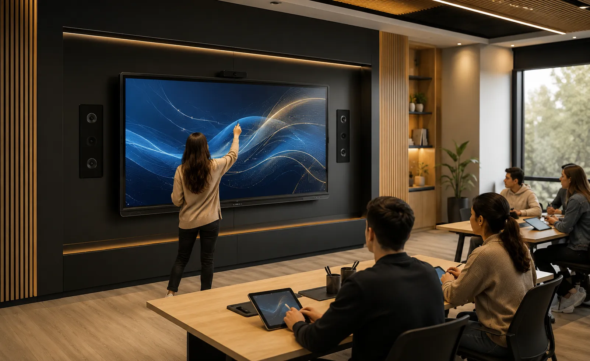
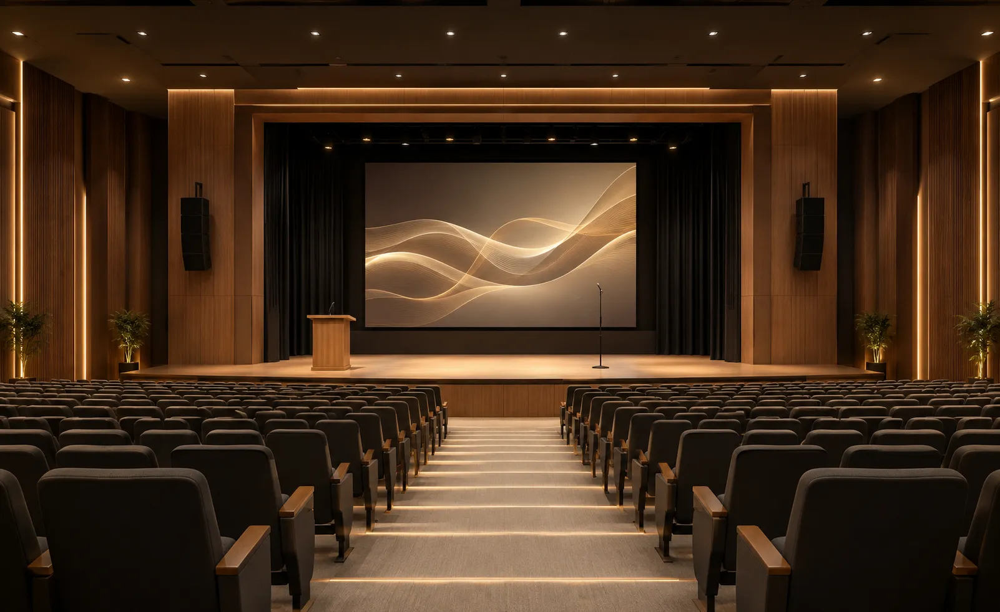
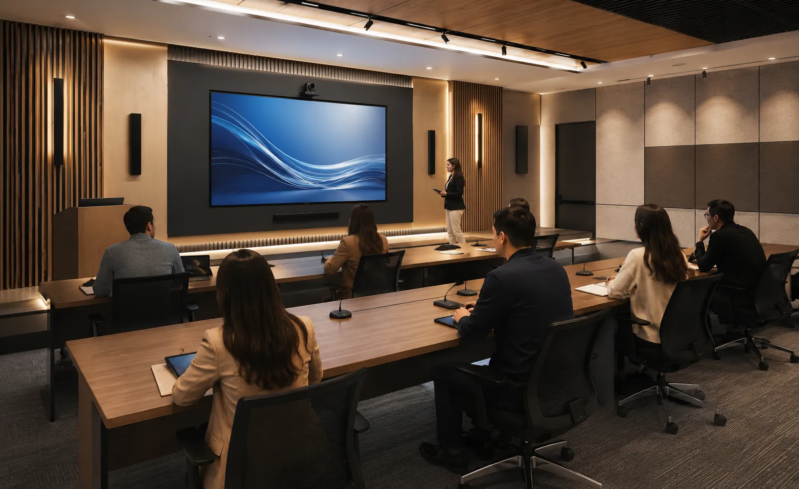
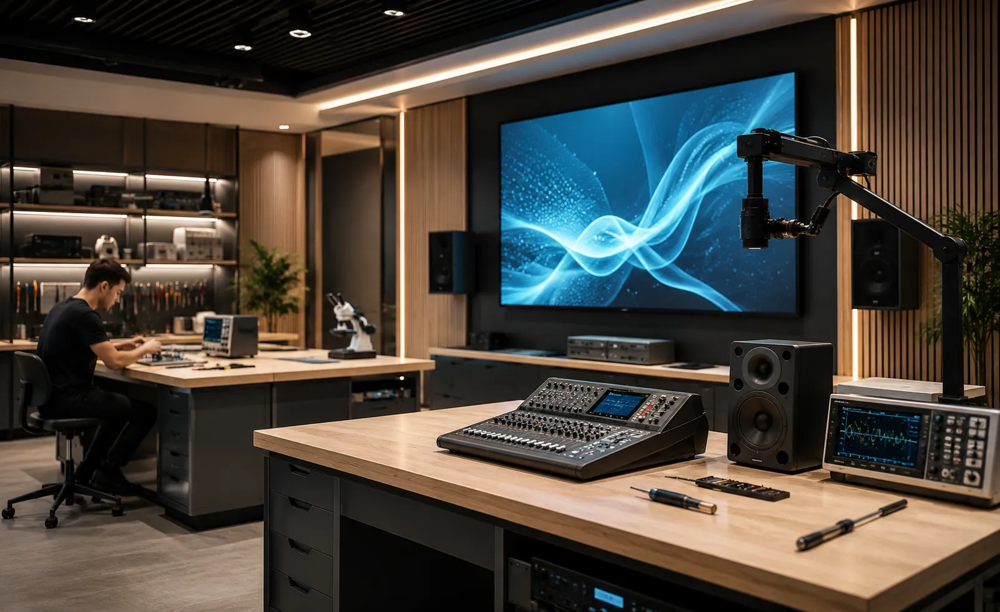
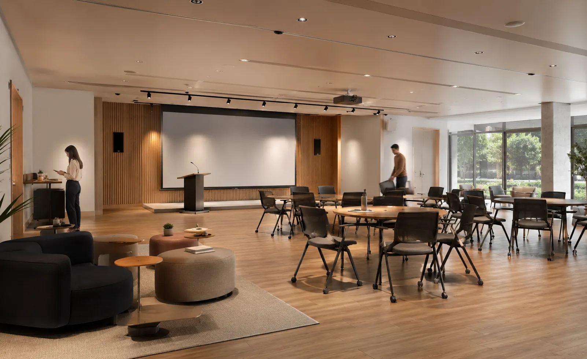
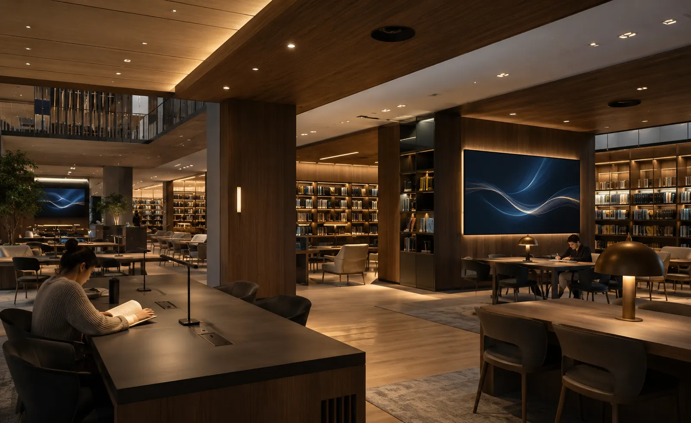

Audio y video para educación: aulas, colaboración y comunicación híbrida.
Diseñamos e integramos soluciones audiovisuales para aulas, universidades,
auditorios escolares, laboratorios y centros de capacitación.
Consideramos
dimensiones, iluminación, distancia de visualización, cobertura de audio, inteligibilidad de
voz, número de usuarios, plataformas, conectividad, operación diaria e infraestructura antes de
seleccionar equipos.
La educación necesita espacios donde todos puedan ver, escuchar y participar
Un aula moderna, un auditorio escolar o una sala de capacitación deben facilitar la comunicación entre docentes, alumnos, directivos e invitados. La solución audiovisual debe responder a la distancia, el tamaño del grupo, el contenido y la dinámica de enseñanza.
En DG Audiosound integramos audio, video, microfonía, visualización, cámaras, conectividad y control para enseñanza presencial, colaboración digital y sesiones híbridas.
El objetivo es que docentes y personal puedan operar el sistema con una lógica clara, reduciendo pasos innecesarios y manteniendo una infraestructura ordenada y mantenible.
Inteligibilidad de voz
Audio, microfonía y cobertura definidos para que la voz del docente o expositor llegue de forma consistente al área de escucha.
Operación sencilla
Fuentes, pantallas, audio y videoconferencia se organizan para reducir pasos y facilitar el uso cotidiano.
Visualización adecuada
Pantallas o proyección se dimensionan según distancia, luz ambiental, resolución, contenido y ángulos de visión.
Infraestructura escalable
Cuando el proyecto lo permite, dejamos capacidad en red, cableado, control o señal para futuras ampliaciones.
Cuando audio, imagen o conectividad están mal dimensionados, la clase se complica
Una cobertura de audio insuficiente, una imagen pequeña o poco visible, conexiones improvisadas o equipos difíciles de operar pueden reducir la utilidad real de la tecnología instalada.
El problema no se resuelve comprando equipos aislados. Cada espacio requiere definir visualización, cobertura de audio, microfonía, cámaras, conectividad, cableado, control, seguridad de instalación y capacidad de crecimiento.
Audio insuficiente
La voz puede perder inteligibilidad cuando no se consideran distancia, ruido ambiental, reverberación, cobertura y nivel de refuerzo.
Imagen limitada
Tamaño, brillo, resolución, ubicación y distancia de visualización deben definirse según el contenido y la geometría del espacio.
Tecnología poco práctica
Si iniciar una clase, compartir contenido o conectar una sesión híbrida requiere demasiados pasos, la operación cotidiana se vuelve inconsistente.
Instalaciones improvisadas
Cables expuestos, soportes inadecuados o puntos eléctricos y de red improvisados pueden complicar seguridad, mantenimiento y operación.
Diseñamos sistemas audiovisuales según el uso real de cada espacio educativo
Evaluamos dimensiones, número de usuarios, distribución, luz ambiental, cobertura, ruido, plataformas, conectividad, fuentes, operación y equipos existentes para definir pantallas, proyección, audio, microfonía, cámaras, control y cableado.
Audio para enseñanza
Altavoces, amplificación, procesamiento y microfonía definidos según cobertura, nivel requerido, ruido ambiental y tamaño del espacio.
Pantallas y proyección
Integramos pantallas interactivas, displays profesionales o proyectores según tamaño de imagen, distancia, luz ambiental y nivel de interacción requerido.
Clases híbridas
Cámaras, microfonía, audio y visualización para videoconferencia, capacitación remota y clases híbridas según la plataforma utilizada.
Instalación ordenada
Coordinamos soportes, cableado, conectividad, ubicación de equipos, configuración y operación para mantener una instalación ordenada y mantenible.
Soluciones audiovisuales para escuelas, universidades y capacitación
Cada institución educativa tiene necesidades distintas: aulas interactivas, auditorios para conferencias, salones de usos múltiples, laboratorios, capacitación ejecutiva o clases híbridas. Por eso diseñamos soluciones por espacio, no paquetes genéricos.
Pantallas interactivas y displays
Visualización para aulas, capacitación y colaboración, con tamaños, resolución, conectividad y funciones seleccionadas según el espacio y el contenido.
Audio para aulas y salones
Altavoces, amplificación, procesamiento y microfonía dimensionados según cobertura, ruido, reverberación, nivel requerido y contenido.
Proyección y visualización
Proyectores, pantallas o displays dimensionados según distancia, luz ambiental, resolución, contenido y posiciones de los usuarios.
Microfonía para docentes y conferencias
Micrófonos de mano, solapa, diadema, podio o mesa seleccionados según número de usuarios, movilidad, cobertura y dinámica del espacio.
Videoconferencia y clases híbridas
Cámaras, audio, pantallas y conectividad para sesiones remotas, capacitación en línea, juntas académicas y colaboración entre sedes.
Control, cableado e instalación
Integramos cableado, soportes, conexiones, racks, control de fuentes, configuración, pruebas y capacitación básica según el alcance.
Espacios educativos donde se aplica
Una solución audiovisual para educación puede aplicarse en espacios pequeños, medianos o de alto aforo. Lo importante es adaptar audio, video, pantallas, microfonía e instalación a la función real de cada área.

Aulas interactivas
Auditorios escolares
Salas de capacitación
Laboratorios y talleres
Salones de usos múltiples
Bibliotecas y centros de estudioCómo trabajamos tu proyecto de audio y video
Un proceso estructurado para definir uso, visualización, cobertura de audio, plataformas, conectividad, equipos, instalación y operación antes de cerrar el proyecto.
Nos contactas
Cuéntanos qué espacios necesitas equipar, cuántos usuarios tendrán y qué tipo de clases, presentaciones o sesiones se realizarán.
Revisamos necesidades
Analizamos medidas, iluminación, ruido, cobertura, distancias, conectividad, plataformas, infraestructura y equipos existentes.
Diseñamos la solución
Definimos visualización, audio, microfonía, cámaras, videoconferencia, cableado, control y capacidad de crecimiento.
Propuesta clara
Te entregamos alcance, equipos, servicios, tiempos, supuestos, exclusiones y pendientes técnicos por confirmar.
Instalamos
Realizamos montaje, cableado, conexión, configuración, pruebas y ajustes conforme al alcance aprobado.
Te capacitamos
Explicamos las funciones y la operación básica al personal responsable del sistema.
No seleccionamos tecnología aislada: diseñamos el sistema para el espacio y su dinámica de enseñanza
Una pantalla, un altavoz o un proyector por sí solos no resuelven la necesidad. Deben dimensionarse visualización, cobertura, microfonía, conectividad, control, cableado y operación como un solo sistema.
Nuestro enfoque combina audio, video, pantallas, microfonía, cámaras, instalación y capacitación básica con criterios de compatibilidad, mantenimiento y crecimiento futuro.
Una decisión profesional para tu institución
- Asesoría personalizada
- Propuesta formal
- Equipos originales
- Instalación profesional
- Integración estética
- Capacitación básica de uso
- Acompañamiento técnico
Marcas profesionales para soluciones de alto rendimiento
Seleccionamos tecnología profesional según visualización, cobertura, conectividad, compatibilidad, plataforma, operación y presupuesto de cada proyecto.
Preguntas frecuentes sobre audio y video para educación
Resolvemos tus dudas principales para ayudarte a planear e invertir con total tranquilidad y claridad técnica.
Puede incluir pantallas interactivas, proyectores, displays, audio, altavoces, microfonía, cámaras, videoconferencia, cableado, soportes, configuración, instalación y capacitación básica. El alcance depende del espacio y uso.
Sí. Podemos integrar pantallas interactivas o displays profesionales para aulas, capacitación y colaboración, junto con audio, conectividad, soportes, cableado y puesta en marcha.
Depende del tamaño del aula, iluminación, distancia de visualización, resolución, tipo de contenido, nivel de interacción, mantenimiento y presupuesto. La selección debe hacerse con esos datos.
Sí. Diseñamos sistemas de audio, microfonía y visualización para auditorios escolares, ceremonias, conferencias, capacitaciones, presentaciones y eventos académicos.
Sí. Podemos integrar cámaras, micrófonos, bocinas, pantallas y conexiones para clases híbridas, capacitación remota, juntas académicas y sesiones con participantes externos.
Sí. La solución puede incluir montaje, cableado, configuración, pruebas y capacitación básica para que el personal responsable conozca la operación del sistema instalado.
Diseñemos el audio y video de tus aulas y espacios académicos
Cuéntanos qué espacio necesitas equipar y revisamos medidas, usuarios, visualización, audio, plataformas, conectividad y equipos existentes.
Hablemos de tu
proyecto educativo
Platícanos si se trata de un aula, auditorio escolar, laboratorio, sala de capacitación o espacio híbrido. Podemos orientarte sobre visualización, audio, microfonía, videoconferencia, conectividad y control.
Solicita asesoría para tu proyecto educativo
Completa el formulario y se abrirá WhatsApp con la información estructurada. Incluye medidas, número de espacios, usuarios, plataformas y equipos existentes cuando los conozcas.